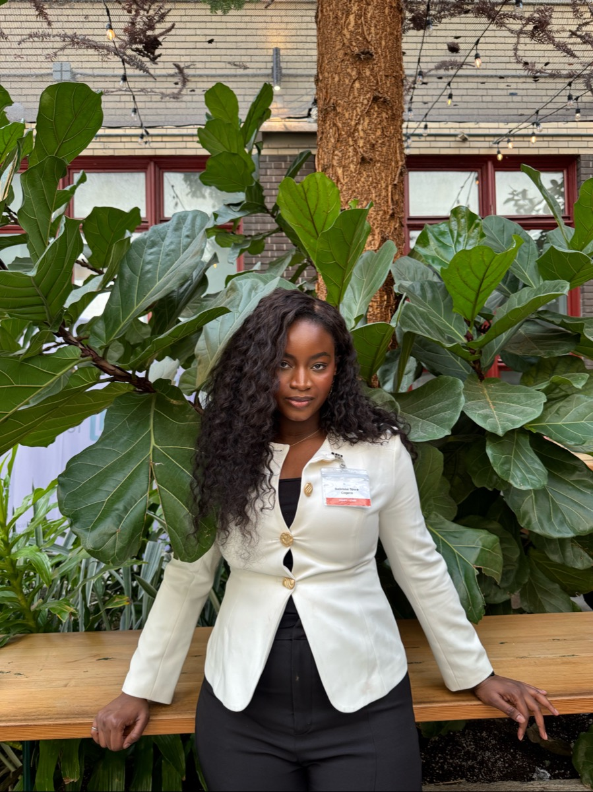

Spécialiste en ingénierie de données et chercheuse en IA responsable, à Montréal.Data engineering specialist and responsible AI researcher, based in Montréal.
Le jour, je construis des plateformes de données et des agents IA sur Google Cloud. Le reste du temps, je cherche comment empêcher l'IA de reproduire nos inégalités, et je l'explique à qui veut l'entendre.By day, I build data platforms and AI agents on Google Cloud. The rest of the time, I study how to stop AI from repeating our inequalities, and I explain it to anyone who will listen.

Je construis des modèles et des agents IA. Puis je vérifie qu'ils traitent tout le monde de façon juste, et je rends ça facile à comprendre.I build models and AI agents. Then I check that they treat everyone fairly, and I make it easy to understand.
Formée en génie informatique à l'Université d'Ottawa, puis en intelligence d'affaires à HEC Montréal, je passe mes journées dans BigQuery, Airflow et les agents IA, et mes soirées dans les métriques d'équité.Trained in computer engineering at the University of Ottawa and in business intelligence at HEC Montréal, I spend my days in BigQuery, Airflow and AI agents, and my evenings in fairness metrics.
Ce mélange est rare, et c'est ce qui me rend utile : je peux ouvrir le code d'un modèle, trouver où il discrimine, puis expliquer le problème à une direction qui n'a jamais vu une ligne de Python.That mix is rare, and it is what makes me useful: I can open a model's code, find where it discriminates, then explain the problem to executives who have never seen a line of Python.
clique sur une feuille pour voir le détailtap a leaf to see the details
Mes travaux forment un projet de recherche mené avec la professeure Joé T. Martineau à la Chaire d'éthique et de gouvernance de l'IA de HEC Montréal : Des biais à l'équité : démystifier, mesurer et corriger les biais dans les systèmes d'IA.My work forms a research project led with Professor Joé T. Martineau at HEC Montréal's Chair in AI Ethics and Governance: From bias to fairness: demystifying, measuring and correcting bias in AI systems.
L'IA trie déjà des CV, accorde des prêts et décide qui sera contrôlé. Quand elle apprend du passé, elle apprend aussi ses injustices.AI already screens résumés, approves loans and decides who gets checked. When it learns from the past, it also learns its injustices.
Dans mon mémoire, j'ai posé une question simple : si deux personnes envoient exactement le même CV et que seul leur genre ou leur origine change, l'IA les traite-t-elle de la même façon ? Et si non, peut-on vraiment corriger ça ?In my thesis, I asked a simple question: if two people send exactly the same résumé and only their gender or ethnicity differs, does the AI treat them the same way? And if not, can we really fix it?
Je voulais aussi le faire en français. Les travaux sur l'équité algorithmique y restent rares, alors que les organisations d'ici adoptent l'IA à toute vitesse.I also wanted to do it in French. Research on algorithmic fairness is still rare in French, while organizations here adopt AI at full speed.
Même diplôme, même expérienceSame degree, same experience
Même diplôme, même expérienceSame degree, same experience
même CV, l'IA biaisée ne voit pas la même chosesame résumé, the biased AI sees something different
Résultats réels du mémoire, biais de genre, sur des données d'entraînement volontairement biaisées.Real results from the thesis, gender bias, on deliberately biased training data.
Le contour marque 80 personnes : sous ce seuil, on parle de discrimination indirecte probable (règle des quatre cinquièmes).The outline marks 80 people: below it, indirect discrimination is likely (the four-fifths rule).
Point caramel : avant correction. Point rose : après. Ligne pointillée : seuil de 20 % d'écart.Caramel dot: before correction. Pink dot: after. Dashed line: 20% gap threshold.
On peut retirer la case « genre » d'un CV, l'information se cache souvent ailleurs : un prénom, un sport, une association. Ce sont des variables proxy. J'en ai injecté de plus en plus fortes pour voir quelles corrections tiennent le coup.You can remove the "gender" box from a résumé, but the information often hides elsewhere: a first name, a sport, a club. These are proxy variables. I injected stronger and stronger ones to see which corrections hold up.
retourne les cartesflip the cards
À la Chaire, je mène des audits techniques d'équité sur des modèles prédictifs réellement utilisés par des organisations. Dans un mandat récent, deux pipelines XGBoost estimaient le risque qu'une personne échoue à une évaluation. Mon rôle : ouvrir le code, mesurer les écarts entre groupes et dire ce qui doit changer.At the Chair, I run technical fairness audits on predictive models that organizations actually use. In a recent engagement, two XGBoost pipelines estimated the risk that a person would fail an assessment. My job: open the code, measure gaps between groups, and say what has to change.
Mandat confidentiel : l'organisation n'est pas nommée et seuls les constats généraux sont présentés.Confidential engagement: the organization is not named and only general findings are shown.
Lecture qualitative des constats, sans les chiffres du mandat.Qualitative reading of the findings, without the engagement's figures.
L'outil Python utilisé calculait ses métriques en moyenne pondérée sur toutes les classes, au lieu de cibler la classe « échec », celle qui compte. Et son taux de sélection était inversé. Résultat : un biais réel pouvait paraître minuscule.The Python tool in use computed its metrics as a weighted average over all classes, instead of targeting the "fail" class, the one that matters. And its selection rate was inverted. The result: a real bias could look tiny.
Exemple illustratif, pas les données du mandat.Illustrative example, not the engagement's data.
Vulgariser, c'est ma façon de rendre la recherche utile. Je parle de biais en IA, de données et de place des femmes en tech.Making research accessible is how I make it useful. I talk about AI bias, data, and women's place in tech.
Plateforme de données, agents IA, audit d'équité d'un modèle, conférence ou atelier sur les biais en IA : écris-moi, je réponds en français ou en anglais.Data platforms, AI agents, a fairness audit, a talk or workshop on AI bias: write to me, in French or English.
les fleurs poussent mieux à plusieursflowers grow better together